10 Visualizing Word Frequencies with Graphs and Word Clouds
10.1 Gutenberg Text Analysis
The code provided is meant to download and display the names of books from the Gutenberg corpus using the NLTK (Natural Language Toolkit) library.
import numpy as np # Import the numpy library, used for numerical operations and array handling
import pandas as pd # Import the pandas library, used for data manipulation and analysis
import nltk # Import the nltk library, used for natural language processing (NLP) tasks
nltk.download('gutenberg') # Download the 'gutenberg' corpus, a collection of literary texts
books_names = nltk.corpus.gutenberg.fileids() # Get a list of available book file IDs (names of the books)
books_names # Display the list of book namesIn the code below, you’re selecting 5 books from the Gutenberg corpus using the books_idx list. Each index in books_idx corresponds to a specific book in books_names.
books_idx = [1, 3, 5, -5, -1] # List of indices to select specific books from the books_names list
selected_books = [] # Initialize an empty list to store selected books
for idx in books_idx: # Loop through each index in books_idx
selected_books.append(books_names[idx]) # Append the book name at the given index to the selected_books list
print(selected_books) # Print the list of selected book names10.1.1 (Gutenberg) Example of Selected Books:
If the books_names list is the following:
['austen-emma.txt', 'austen-persuasion.txt', 'austen-sense.txt', 'bible-kjv.txt', 'blake-poems.txt', 'bryant-stories.txt', 'burgess-busterbrown.txt', 'carroll-alice.txt', 'chesterton-ball.txt', 'chesterton-brown.txt', 'chesterton-thursday.txt', 'edgeworth-parents.txt', 'melville-moby_dick.txt', 'milton-paradise.txt', 'shakespeare-caesar.txt', 'shakespeare-hamlet.txt', 'shakespeare-macbeth.txt', 'whitman-leaves.txt']The indices [1, 3, 5, -5, -1] correspond to: - 1: 'austen-persuasion.txt' - 3: 'bible-kjv.txt' - 5: 'bryant-stories.txt - -5: 'milton-paradise.txt' - -1: 'whitman-leaves.txt'
So, selected_books will contain:
['austen-persuasion.txt', 'bible-kjv.txt', 'bryant-stories.txt', 'milton-paradise.txt', 'whitman-leaves.txt']Save the selected texts to my local drive.
import os
import nltk
# Ensure the required corpus is available
nltk.download('gutenberg')
# Sample selected_books for demonstration, in case corpus access is not available
selected_books = ['austen-persuasion.txt', 'bible-kjv.txt', 'chesterton-ball.txt', 'melville-moby_dick.txt', 'whitman-leaves.txt']
# Define the folder name where the files will be saved
folder_name = "/mnt/data/selected_books_texts"
# Create the folder if it doesn't exist
if not os.path.exists(folder_name):
os.makedirs(folder_name) # Create the subfolder
# Iterate through each selected book and save its content to a file in the subfolder
for book in selected_books:
# Get the full text of the book using nltk.corpus.gutenberg.raw() function
book_text = nltk.corpus.gutenberg.raw(book)
# Create a file name for each book by removing ".txt" from the file id
file_name = book.replace('.txt', '') + '_content.txt'
# Define the full path to save the file in the subfolder
full_path = os.path.join(folder_name, file_name)
# Write the book content to a text file in the subfolder
with open(full_path, 'w') as file:
file.write(book_text) # Write the full text of the book to the file
# Displaying the directory path where the books are saved
folder_name10.1.2 (Gutenberg) Load the text of txt:
# Load the text of "austen-persuasion.txt"
doc_austen = nltk.corpus.gutenberg.raw('austen-persuasion.txt') # Use nltk.corpus.gutenberg.raw() to get the full text
# Print the number of characters in the text
print('#Num of characters used:', len(doc_austen)) # Print the total number of characters in the book
# Print a sample of the first 100 characters
print('#Text sample:')
print(doc_austen[:100]) # Print the first 100 characters of the bookOutput:
```
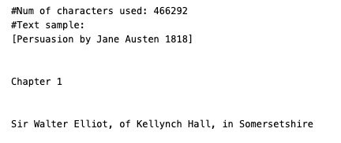
```
10.1.3 Tokenize
Tokenization is a fundamental step in Natural Language Processing (NLP) that involves splitting text into smaller units, known as tokens. These tokens could be words, phrases, sentences, or even characters, depending on the type of tokenization applied.
Tokenization is a crucial preprocessing step for text analysis because it breaks down raw text into manageable pieces that can be analyzed or manipulated. It allows algorithms to understand and process text data effectively. For example, tokenization helps convert a text document into a form that can be used for tasks like text classification, sentiment analysis, machine translation, etc.
10.1.3.1 Types of Tokenization:
- Word Tokenization:
- Splits the text into individual words.
- Example:
- Input:
"The cat sat on the mat." - Output:
['The', 'cat', 'sat', 'on', 'the', 'mat']
- Input:
- Sentence Tokenization:
- Splits the text into sentences.
- Example:
- Input:
"The cat sat on the mat. It was happy." - Output:
['The cat sat on the mat.', 'It was happy.']
- Input:
- Character Tokenization:
- Splits the text into individual characters.
- Example:
- Input:
"cat" - Output:
['c', 'a', 't']
- Input:
- Subword Tokenization:
- Splits words into smaller units, useful in languages where words are made up of many parts (like in morphologically rich languages). Models like BPE (Byte Pair Encoding) or WordPiece use subword tokenization.
- Example:
- Input:
"unhappiness" - Output:
['un', 'happi', 'ness']
- Input:
10.1.3.2 Example of Tokenization in Python Using NLTK:
The NLTK (Natural Language Toolkit) provides functions to tokenize text easily.
Word Tokenization Example:
import nltk
from nltk.tokenize import word_tokenize
# Example sentence
text = "The cat sat on the mat."
# Tokenize the sentence into words
tokens = word_tokenize(text)
print(tokens)Output:
['The', 'cat', 'sat', 'on', 'the', 'mat', '.']Sentence Tokenization Example:
from nltk.tokenize import sent_tokenize
# Example paragraph
text = "The cat sat on the mat. It was happy."
# Tokenize the text into sentences
sentences = sent_tokenize(text)
print(sentences)Output:
['The cat sat on the mat.', 'It was happy.']10.1.3.3 Applications of Tokenization:
- Text Classification: Breaking down text into words to feed into a machine learning model.
- Machine Translation: Splitting input and output sentences to translate between languages.
- Information Retrieval: Indexing tokens (words) to help retrieve documents based on search queries.
- Text Analysis: Tokenized text allows algorithms to count word frequencies, perform sentiment analysis, and more.
10.1.4 (Gutenberg) Tokenize the selected txt:
from nltk.tokenize import word_tokenize # Import the word_tokenize function from NLTK
# Tokenize the doc_alice text (assuming doc_alice contains the raw text of "Alice in Wonderland")
tokens_austen = word_tokenize(doc_austen)
# Print the number of tokens generated after tokenization
print('#Num of tokens used:', len(tokens_austen))
# Print a sample of the first 20 tokens
print('#Token sample:')
print(tokens_austen[:20])Output:
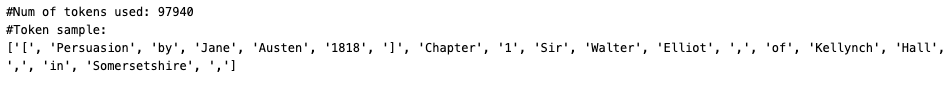
The following pattern captures words with 3 or more alphanumeric characters or apostrophes.
from nltk.tokenize import RegexpTokenizer # Import the RegexpTokenizer from NLTK
# Initialize the tokenizer with a regular expression pattern
tokenizer = RegexpTokenizer(r"[\w']{3,}") # This pattern captures words with 3 or more alphanumeric characters or apostrophes
# Tokenize the text (converted to lowercase) using the RegexpTokenizer
reg_tokens_austen = tokenizer.tokenize(doc_austen.lower()) # Convert text to lowercase before tokenization
# Print the number of tokens after Regexp tokenization
print('#Num of tokens with RegexpTokenizer:', len(reg_tokens_austen))
# Print a sample of the first 20 tokens
print('#Token sample:')
print(reg_tokens_austen[:20])Output:
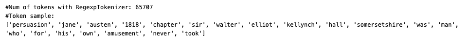
10.2 What is Stopwords?
Stopwords are common words in a language that are often filtered out before processing natural language text. These words carry very little semantic meaning and are often omitted during tasks such as text mining, search indexing, and information retrieval. The goal of removing stopwords is to reduce the noise and focus on the more meaningful words that contribute to the context or content of the text.
10.2.1 Why Remove Stopwords?
Stopwords such as “the”, “is”, “in”, “and”, “on”, etc., are very frequent in most texts but don’t carry significant meaning by themselves. Removing them can:
Reduce text size: Fewer words mean faster processing, which can improve the efficiency of algorithms.
Improve focus: Removing common, non-informative words helps focus on the important terms that can provide insights.
Reduce dimensionality: When working with techniques like TF-IDF, vectorization, or word embeddings, removing stopwords helps lower the dimensionality of the data.
10.2.2 Common Examples of Stopwords:
- English stopwords:
"the", "is", "in", "at", "on", "and", "a", "an", "but", "or", "so", "if", "then", etc. - Stopwords vary by language. Each language has its own set of stopwords based on the common, non-essential words in that language.
10.2.3 Example of Stopwords in Python Using NLTK:
The NLTK library provides a built-in list of stopwords for various languages. Here’s how you can use them:
import nltk
from nltk.corpus import stopwords
# Download the stopwords dataset
nltk.download('stopwords')
# Get the list of English stopwords
stop_words = set(stopwords.words('english'))
# Example sentence
text = "The cat sat on the mat and the dog lay beside it."
# Tokenize the text into words
from nltk.tokenize import word_tokenize
words = word_tokenize(text)
# Filter out the stopwords
filtered_words = [word for word in words if word.lower() not in stop_words]
print("Original Words:", words)
print("Filtered Words (without stopwords):", filtered_words)Output:
Original Words: ['The', 'cat', 'sat', 'on', 'the', 'mat', 'and', 'the', 'dog', 'lay', 'beside', 'it', '.']
Filtered Words (without stopwords): ['cat', 'sat', 'mat', 'dog', 'lay', 'beside', '.']As you can see, common words like “the”, “on”, “and”, “it” have been removed, leaving only the more meaningful words.
10.2.4 When Not to Remove Stopwords:
While stopwords are typically removed for most NLP tasks, there are cases where you might want to retain them, such as:
Sentiment Analysis: Words like “not”, “is”, “but” can change the sentiment of a sentence.
Language Modeling: For tasks like speech generation, translation, or conversational agents, removing stopwords might lose important grammatical structure.
10.2.5 Stopwords in Other NLP Libraries:
In addition to NLTK, stopwords are also supported in other libraries like spaCy and Scikit-learn.
10.2.5.1 Stopwords in spaCy:
import spacy
from spacy.lang.en.stop_words import STOP_WORDS
# Load English model
nlp = spacy.load("en_core_web_sm")
# Example of using spaCy stopwords
print(STOP_WORDS)from nltk.corpus import stopwords # Import the stopwords list from NLTK
# Load the set of English stopwords (commonly excluded words like 'the', 'is', etc.)
english_stops = set(stopwords.words('english')) # Convert to set for faster lookup
# Filter out stopwords from the list of tokens using list comprehension
result_austen = [word for word in reg_tokens_austen if word not in english_stops]
# Print the number of tokens after stopword elimination
print('#Num of tokens after stopword elimination:', len(result_austen))
# Print a sample of the first 20 tokens after removing stopwords
print('#Token sample:')
print(result_austen[:20])Output:
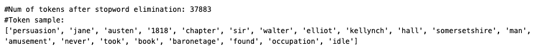
10.2.6 (Gutenberg) Word Frequency Count of the selected txt:
# Initialize an empty dictionary to store word counts
austen_word_count = dict()
# Count the frequency of each word in result_alice
for word in result_austen:
austen_word_count[word] = austen_word_count.get(word, 0) + 1 # Increment the count for each word
# Print the total number of unique words used
print('#Num of used words:', len(austen_word_count))
# Sort the dictionary by word frequency in descending order
sorted_word_count = sorted(austen_word_count, key=austen_word_count.get, reverse=True)
# Print the top 20 most frequent words
print("#Top 20 high frequency words:")
for key in sorted_word_count[:20]: # Loop through the top 20 most frequent words
print(f'{repr(key)}: {austen_word_count[key]}', end=', ')Output:
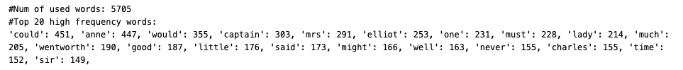
10.2.7 (Gutenberg) Word Frequency Count of the selected txt with Part-of-Speech (POS):
# Define the set of part-of-speech (POS) tags we are interested in
my_tag_set = ['NN', 'VB', 'VBD', 'JJ'] # NN: Nouns, VB: Verbs (base), VBD: Verbs (past), JJ: Adjectives
# Filter words based on their POS tags
my_words = [word for word, tag in nltk.pos_tag(result_austen) if tag in my_tag_set]
# Initialize an empty dictionary to store word counts
austen_word_count = dict()
# Count the frequency of each filtered word
for word in my_words:
austen_word_count[word] = austen_word_count.get(word, 0) + 1 # Increment the count for each word
# Print the total number of unique words used after filtering by POS tags
print('#Num of used words:', len(austen_word_count))
# Sort the dictionary by word frequency in descending order
sorted_word_count = sorted(austen_word_count, key=austen_word_count.get, reverse=True)
# Print the top 20 most frequent words
print("#Top 20 high frequency words:")
for key in sorted_word_count[:20]: # Loop through the top 20 most frequent words
print(f'{repr(key)}: {austen_word_count[key]}', end=', ')Output:
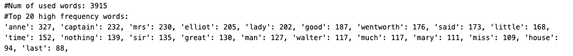
10.3 Visualization
Visualizing word frequencies can help you understand the most common words in a text and gain insights into the text data. Here are some common methods to visualize word frequencies:
10.3.1 Bar Plot
A bar plot is a simple and effective way to visualize word frequencies. The most frequent words can be shown on the x-axis, and their frequencies on the y-axis.
10.3.2 Word Cloud
A word cloud represents words with varying font sizes depending on their frequencies. Words that appear more frequently are displayed larger, while less frequent words are smaller.
10.3.3 Example 1: Visualize Word Frequencies Using a Bar Plot
You can use the matplotlib and seaborn libraries to create a bar plot showing the most frequent words.
10.3.3.1 Steps:
- Count the word frequencies.
- Sort the word frequencies in descending order.
- Plot the top N most frequent words.
10.3.3.2 Code Example:
import matplotlib.pyplot as plt
import seaborn as sns
# Example word count dictionary (can be your `austen_word_count`)
word_frequencies = {"the": 50, "cat": 10, "sat": 8, "on": 20, "mat": 5}
# Convert to a list of tuples and sort by frequency (descending)
sorted_words = sorted(word_frequencies.items(), key=lambda x: x[1], reverse=True)
# Get top N most frequent words
top_words = sorted_words[:5] # Top 5 most frequent words
# Separate words and frequencies for plotting
words, counts = zip(*top_words)
# Create a bar plot
plt.figure(figsize=(8, 6))
sns.barplot(x=list(words), y=list(counts), palette="viridis")
plt.title("Top 5 Most Frequent Words")
plt.ylabel("Frequency")
plt.xlabel("Words")
plt.show()10.3.3.3 Explanation:
Let’s break down the line of code in detail:
sorted_words = sorted(word_frequencies.items(), key=lambda x: x[1], reverse=True)word_frequencies.items()
word_frequencies is a dictionary that stores the words as keys and their frequencies as values. For example, the dictionary might look like this:
word_frequencies = {
"the": 50,
"cat": 10,
"sat": 8,
"on": 20,
"mat": 5
}The .items() method is used to get the items of the dictionary. When you call .items() on a dictionary, it returns a view object that contains a list of key-value pairs (tuples). Each tuple contains a word and its corresponding frequency.
For example:
word_frequencies.items()Output:
[('the', 50), ('cat', 10), ('sat', 8), ('on', 20), ('mat', 5)]So, word_frequencies.items() returns the following list of tuples:
[('the', 50), ('cat', 10), ('sat', 8), ('on', 20), ('mat', 5)]sorted(..., key=lambda x: x[1], reverse=True)
This part of the code is responsible for sorting the word-frequency pairs based on the frequency values.
sorted() Function:
The sorted() function takes an iterable (in this case, the list of word-frequency pairs) and returns a new sorted list. By default, sorted() sorts items in ascending order. However, it allows for customization through two important arguments:
key: This defines a function that will be applied to each item to extract a comparison key for sorting. In this case, we want to sort the tuples by their frequency (the second item in each tuple,x[1]).reverse: If set toTrue, this will sort the list in descending order instead of the default ascending order.
key=lambda x: x[1]
- The
keyargument allows us to specify a custom sorting criterion. In this case, we use a lambda function (lambda x: x[1]) to tell Python how to sort the list. - A lambda function is an anonymous, short function that is often used for small operations that are only needed temporarily.
lambda x: x[1] means: - For each tuple in the list (e.g., ('the', 50)), treat x as the tuple. - x[1] refers to the second element of the tuple, which is the frequency in this case.
So, when the sorting process happens, the sorted function will compare the second element of each tuple (i.e., the frequencies) to determine the order.
reverse=True
- This tells the
sorted()function to sort the list in descending order. By default, sorting is done in ascending order (smallest to largest), butreverse=Truereverses that order, sorting from the highest frequency to the lowest.
words, counts = zip(*top_words)zip(*top_words):
-
zip()is a Python built-in function that takes multiple iterables (like lists, tuples, etc.) and returns an iterator of tuples, where each tuple contains elements from the provided iterables at corresponding positions.- In this case, the
*operator is called the unpacking operator (also known as the splat operator). It unpacks the list of tuples (top_words) so that each tuple in the list is treated as a separate argument to thezip()function.
Let’s see what happens step by step:
top_wordsis:[('the', 50), ('on', 20), ('cat', 10), ('sat', 8), ('mat', 5)]The
*top_wordsunpacks the list of tuples into separate arguments. Thezip()function will receive each tuple separately, as if you passed:zip(('the', 50), ('on', 20), ('cat', 10), ('sat', 8), ('mat', 5))Now,
zip()will combine the first elements of each tuple into one iterable, and the second elements into another iterable:- It takes the first element of each tuple (words) and groups them together:
('the', 'on', 'cat', 'sat', 'mat'). - It takes the second element of each tuple (counts) and groups them together:
(50, 20, 10, 8, 5).
- It takes the first element of each tuple (words) and groups them together:
So, zip(*top_words) effectively separates the words and their frequencies into two separate iterables.
words, counts = zip(*top_words):
wordsandcountsare assigned the result ofzip(*top_words).wordswill contain the tuple with all the words:('the', 'on', 'cat', 'sat', 'mat').countswill contain the tuple with all the word frequencies:(50, 20, 10, 8, 5).
10.3.4 Example in Action:
Let’s say you have the following top_words:
top_words = [('the', 50), ('on', 20), ('cat', 10), ('sat', 8), ('mat', 5)]When you apply the line:
words, counts = zip(*top_words)Here’s what happens:
- Unpacking
top_words:- The
*unpacks the list into separate tuples:('the', 50)('on', 20)('cat', 10)('sat', 8)('mat', 5)
- The
zip()function groups elements:- Groups the first elements of all tuples (the words):
('the', 'on', 'cat', 'sat', 'mat') - Groups the second elements of all tuples (the frequencies):
(50, 20, 10, 8, 5)
- Groups the first elements of all tuples (the words):
- Assigning the results:
wordswill contain:('the', 'on', 'cat', 'sat', 'mat')countswill contain:(50, 20, 10, 8, 5)
Now, you have two separate sequences (words and their corresponding frequencies), which can be used for plotting or further processing.
10.3.5 Example 2: Visualize Word Frequencies Using a Word Cloud
The wordcloud library can be used to generate word clouds. You can adjust the appearance by changing parameters such as the background color, maximum number of words, etc.
10.3.5.1 Code Example:
from wordcloud import WordCloud
import matplotlib.pyplot as plt
# Example word count dictionary (can be your `austen_word_count`)
word_frequencies = {"the": 50, "cat": 10, "sat": 8, "on": 20, "mat": 5}
# Create a word cloud object
wordcloud = WordCloud(width=800, height=400, background_color="white").generate_from_frequencies(word_frequencies)
# Plot the word cloud
plt.figure(figsize=(10, 5))
plt.imshow(wordcloud, interpolation="bilinear")
plt.axis("off") # No axes, just the word cloud
plt.show()10.3.5.2 Explanation:
- The
WordCloud()object is created using the word frequencies. - The
generate_from_frequencies()method is used to pass the word frequencies into the word cloud. - The plot is displayed with
matplotlib, and the axes are turned off for a cleaner look.
10.3.5.3 Output:
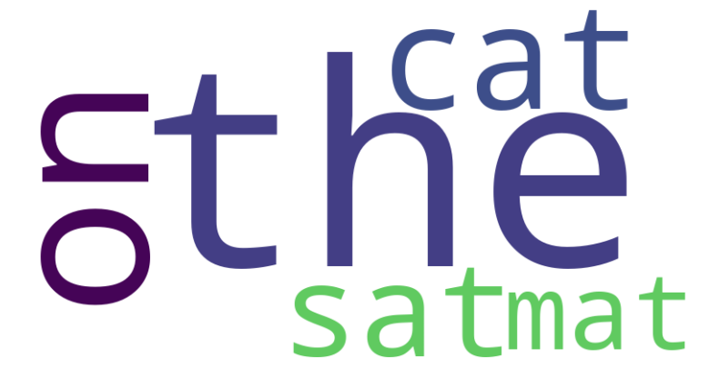
10.3.6 Choosing the Right Visualization:
- Bar Plot: Best when you want to compare the exact counts of the most frequent words.
- Word Cloud: Provides a more artistic and immediate visual representation but doesn’t allow for easy comparison of exact counts.
10.3.7 (Gutenberg) Frequency Curve:
import matplotlib.pyplot as plt # Import the matplotlib library for plotting
# %matplotlib inline # Ensure plots appear inline in notebooks (if using Jupyter)
# Extract the frequencies of the words in the sorted word list
w = [austen_word_count[key] for key in sorted_word_count] # Get the frequencies of sorted words
# Plot the word frequencies
plt.plot(w)
# Display the plot
plt.show()Output:
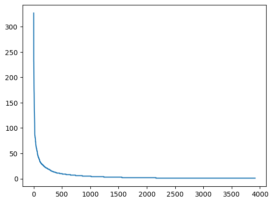
10.3.8 Zipf’s Law curve or Zipfian distribution.
10.3.8.1 Zipf’s Law:
Zipf’s Law states that in a corpus of natural language text, the frequency of any word is inversely proportional to its rank in the frequency table. In simpler terms:
- The most frequent word occurs twice as often as the second most frequent word, three times as often as the third most frequent word, and so on.
10.3.8.2 Key Characteristics:
- The x-axis typically represents the rank of words in terms of frequency (with the most frequent word ranked 1).
- The y-axis represents the frequency of those words.
- The curve shows a steep drop for the highest frequency words, followed by a long tail of lower frequency words, which is characteristic of power-law distributions.
* What is power-law distribution?
https://alcera.wpcomstaging.com/2016/09/14/another-powerful-idea-the-power-law/
10.3.8.3 Why Does It Matter?
Zipf’s law highlights the natural imbalance in word usage: a few words (like “the”, “is”, “and”) are used very frequently, while the majority of words in a language are used infrequently. This insight is crucial for tasks like:
Stopword removal: Removing extremely common words that provide little unique information.
Vocabulary management: Determining which words to prioritize when building language models.
10.3.9 (Gutenberg) Bar Plot:
import matplotlib.pyplot as plt # Ensure matplotlib is imported
# Extract the top 20 most frequent words
n = sorted_word_count[:20] # Select the top 20 words based on frequency
# Get the frequencies of the top 20 words
w = [austen_word_count[key] for key in n] # Get the frequency values for the top 20 words
# Plot the bar chart
plt.bar(range(len(n)), w, tick_label=n) # Create a bar chart; 'tick_label' adds the word labels
# Rotate the x-axis labels by 45 degrees
plt.xticks(rotation=45)
# Display the plot
plt.show()Output:
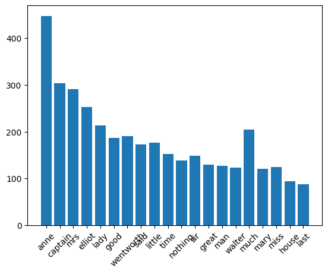
10.3.10 (Gutenberg) Word Cloud:
from wordcloud import WordCloud
import matplotlib.pyplot as plt # Import matplotlib for displaying the word cloud
# Generate a word cloud image from the raw text
wordcloud = WordCloud().generate(doc_austen)
# Turn off the axis lines and labels
plt.axis("off")
# Display the word cloud image using matplotlib
plt.imshow(wordcloud, interpolation='bilinear')
# Show the plot
plt.show()Output:
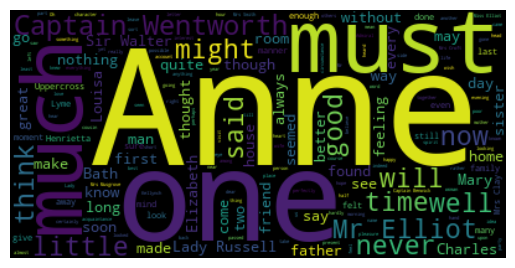
wordcloud = WordCloud(max_font_size=60).generate_from_frequencies(austen_word_count)
plt.figure()
plt.axis("off")
plt.imshow(wordcloud, interpolation="bilinear")
plt.show()Output:
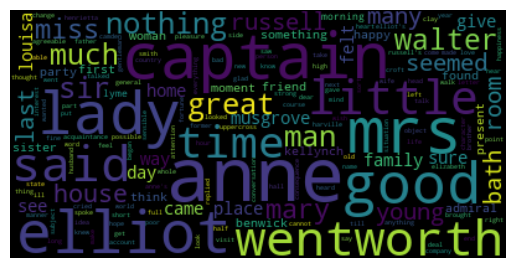
With mask image:
import numpy as np # Import numpy to handle arrays
from PIL import Image # Import PIL for image processing
from wordcloud import WordCloud # Import the WordCloud class for generating word clouds
import matplotlib.pyplot as plt # Import matplotlib for displaying the word cloud
# Load the mask image (used as the background shape for the word cloud)
austen_mask = np.array(Image.open("cloud.png")) # Convert the image to a numpy array
# Create a word cloud object with customization options
wc = WordCloud(
background_color="white", # Set the background color of the word cloud
max_words=30, # Maximum number of words to display
mask=austen_mask, # Use the mask image to shape the word cloud
contour_width=3, # Set the width of the outline of the mask
contour_color='steelblue' # Set the color of the contour/outline
)
# Generate the word cloud using the word frequencies from alice_word_count
wc.generate_from_frequencies(austen_word_count)
# Save the generated word cloud to a file
wc.to_file("cloud_output.png") # Save the output as "cloud_output.png"
# Display the word cloud using matplotlib
plt.figure() # Create a new figure
plt.axis("off") # Turn off axis lines and labels
plt.imshow(wc, interpolation='bilinear') # Display the word cloud
plt.show() # Show the word cloudOutput:
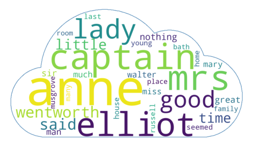
End.